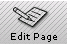
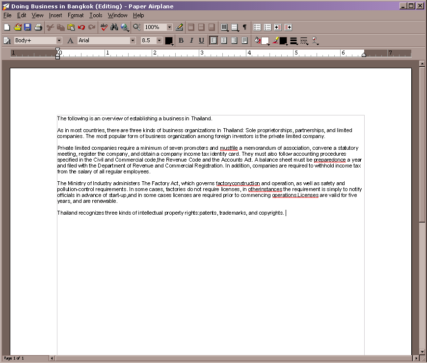
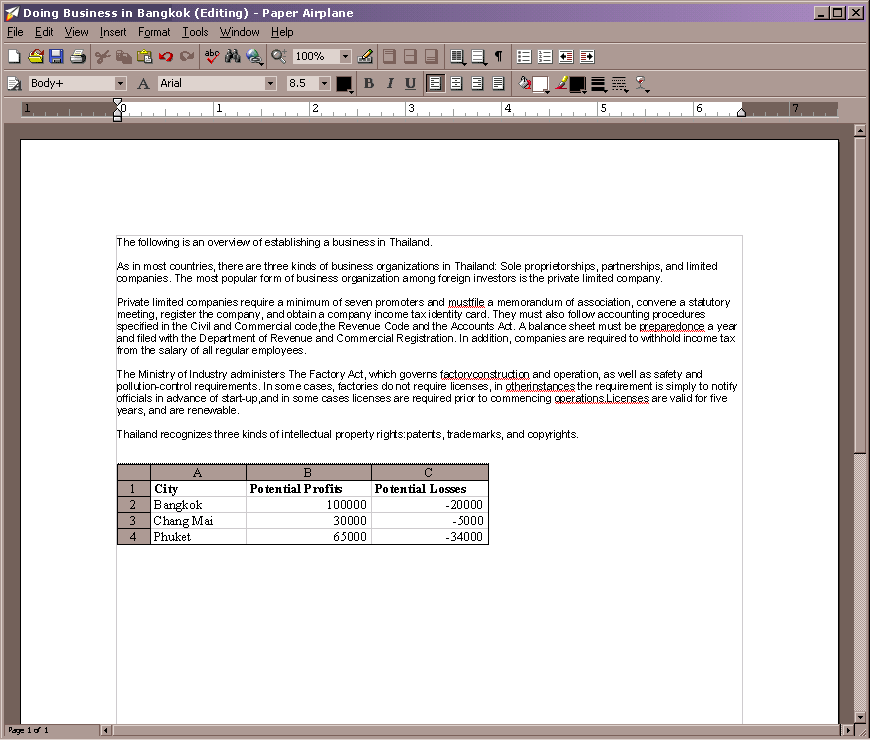
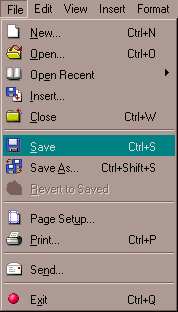
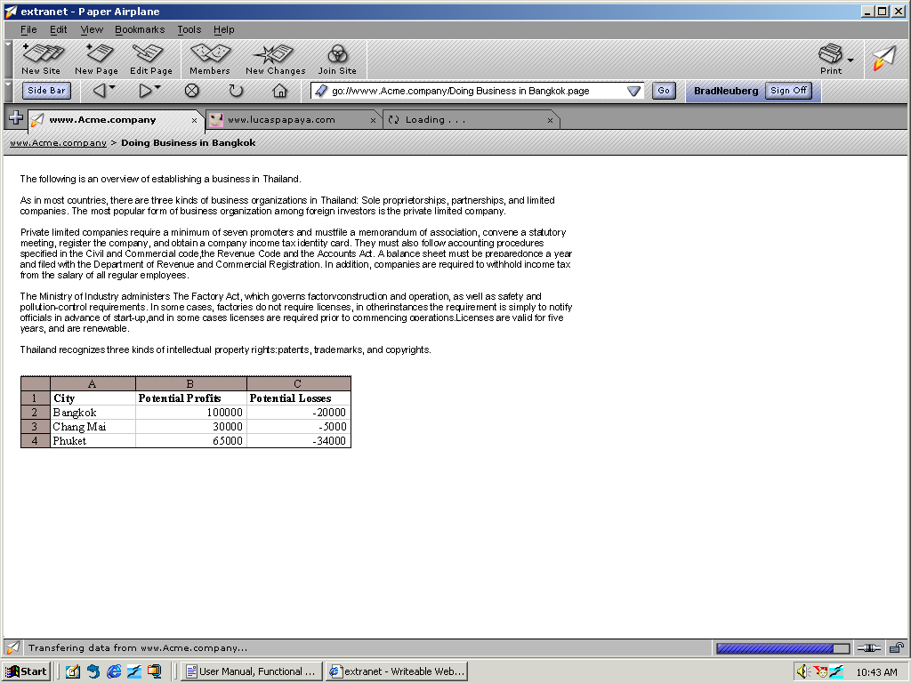

| | |
Table of Contents | Last | Next
Walkthrough - Seamless Collaboration
Seamless Editing Within the Browser
Every web page you visit in a Two Way Web Site can be edited by pressing the Edit Page icon:

The Edit Page Button
If you are a Manager or Member for that site, simply press this button to begin editing the current page right within the browser. The Paper Airplane editor will open in a new window:

Editing "Doing Business in Bangkok"
Make some changes to this page, such as inserting a spreadsheet:
:
Editing "Doing Business in Bangkok" 2
When you're finished, simply go to the File pull-down menu and select Save:

File Pull-Down Menu While Editing "Doing Business in Bangkok"
The modified web-page will seamlessly be saved into the Two Way Web peer-to-peer network. Now other users can see the updates you have made to that page:

Viewing Modified "Doing Business in Bangkok" Page